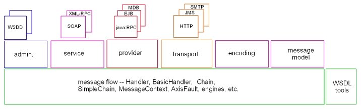

Axis Architecture Guide: Proposals
Feedback: axis-dev@xml.apache.org
Contents
Introduction
Axis Subsystems
Message Flow Subsystem
Introduction
This guide records rationale, architecture, and design.
The aim is to give readers a reasonable understanding of the
architecture before they read the code and yet
to reflect closely the structure of the code.
This will necessitate changes to the code structure so that it supports
the architecture explicitly.
Axis Subsystems
The Axis architecture guide describes a collection of subsystems using
the diagram below.
However, these subsystems are not as cleanly separated as the diagram
might imply. The remainder of the document proposes ways of improving this.

Message Flow Subsystem
This subsystem simply handles the flowing of message contexts through a
series of Handlers. The series of Handlers is determined partly statically
and partly dynamically in that a message context starts flowing through
a pre-determined series of Handlers which determine the remaining set of
Handlers that are required to process the message context.
The proposal is to introduce some interfaces and abstract classes which
will help to decouple the subsystem from others.
It may be the cases that very little concrete implementation is
required in the subsystem as this tends quickly to drag in dependencies on
other subsystems.
Configuration
Currently, an Axis engine may be dynamically reconfigured.
This leads to various races in a multi-threaded environment and so
a difficulty in describing what Handlers can rely upon in terms of whether
onFault can be driven without a corresponding invoke.
It would be possible to solve these problems "head on", but the result
would be unnecessarily complex.
The alternative presented here is to regard an engine configuration to
be immutable, i.e. unchanging after construction. The way to change the
engine configuration in a running server is to construct a fresh engine
with the desired configuration and then "switch it in".
This change is especially important as it properly separates configuration
interfaces from the Handler interface and makes these subsystems better
decoupled.
Pivots
Currently, there is a notion of a pivot Handler as the Handler which
effectively takes a request and returns a response.
There are some problems with the notion of a pivot Handler:
- The notion doesn't seem to serve much purpose. The one
explicit use is to be able to get either the request or response
message out of the message context, depending upon whether
the pivot point has been passed or not, without being aware of which
is being returned. This serves little purpose.
- Pivots seem to preclude the possibility of constructing partial
response messages prior to completing processing of the
request message.
- Pivots make no sense for message exchange patterns that do
not involve a response or for which the response takes a
different route to the request.
Pivot Handlers are optional in order to alleviate some
of these problems.
This proposal avoids the notion of pivot Handlers.
Fault Handling
Currently, each Axis Handler has an onFault method which is driven when
a fault occurs in the processing of a message context after the Handler
has been invoked (but in the same engine/JVM).
However, there are several problems with this approach:
- the majority of Handlers are not interested in subsequent faults,
so onFault clutters up the Handler interface unnecessarily,
- Handlers that are interested in subsequent faults also tend to
be interested in normal completion and so a cleanup method is needed,
further complicating the interface.
The approach taken here is to factor out a separate FaultableHandler
interface with onFault and cleanup methods.
A Handler expresses its interest in faults by implementing the
FaultableHandler interface.
FaultableHandler is omitted since Axis currently makes
no use of onFault.
Message Context
The MessageContext interface provides access to request and response
messages in terms of a Message marker interface.
The alternative of an abstract Marker class extending the
javax.xml.soap.SOAPMessage abstract class would limit Axis to SOAP
messages and bias the flow subsystem towards the SAAJ interface style.